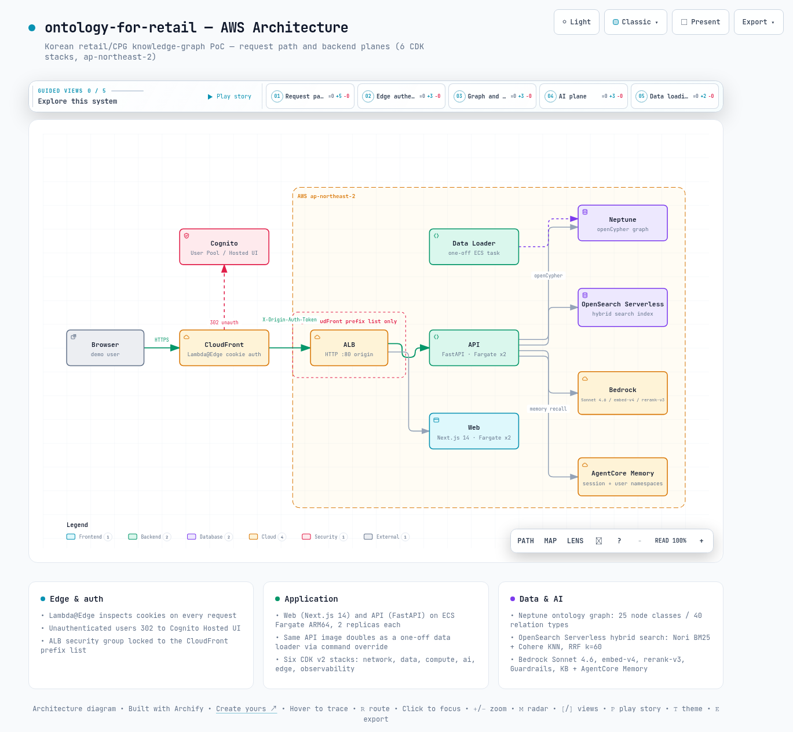

01왜 리테일 경험에 도메인 온톨로지인가
이 절은 리테일 서비스가 실제로 마주하는 질문의 성격을 살펴봅니다. 그 질문이 왜 문서 검색이 아니라 관계 데이터로 풀리는지가 문서 전체의 출발점입니다.
리테일에서 가치 있는 질문은 대부분 관계에 대한 질문입니다. "임산부가 피해야 할 성분이 든 상품은 무엇인가", "이 상품의 같은 카테고리 다른 브랜드 대체재는 무엇인가", "캠핑족 회원은 어느 채널에서 어떤 가격을 만나는가" 같은 질문이 그렇습니다. 답의 재료가 상품, 성분, 페르소나, 채널, 회원, 물류 거점의 연결 관계이기 때문에, 문서 검색만으로는 답이 나오지 않습니다.
ontology-for-retail은 이 관계들을 온톨로지(도메인의 개념과 관계를 명시적으로 정의한 스키마)로 고정한 PoC(개념 검증용 프로젝트)입니다. 관계 저장소는 AWS의 그래프 데이터베이스인 Neptune입니다. 그 위에 13개 시나리오(A-M)를 얹어, 온톨로지 하나가 얼마나 많은 경험을 움직일 수 있는지를 30-60분 데모로 보여줍니다.
시나리오의 폭도 넓습니다. 의미 검색과 대화형 에이전트 같은 LLM 시나리오부터, 이탈 위험 진단과 등급 상승 lift(비교 집단 대비 구매율이 몇 배인지 보는 지표) 같은 순수 그래프 집계 시나리오까지 전부 같은 그래프를 공유합니다.
데모 전체를 관통하는 장치는 5개의 스파인 페르소나입니다. 임산부, 4세 아이 엄마, 캠퍼, 민감성 피부, 글루텐 알레르기입니다.
40개의 서사형 페르소나(psn_*) 중에서는 라벨 키워드가 스파인과 매칭되는 것만 DERIVED_FROM 엣지로 스파인에 연결됩니다. 몇 개나 연결될까요? 현재 40개 중 9개이고, 나머지는 회원 집합으로 해석되지 않습니다. 시나리오 A부터 M까지 같은 페르소나 컨텍스트가 유지되는 것이 이 PoC의 설계 목표 중 하나입니다.
원칙: 시나리오마다 데이터 모델을 새로 만들지 않습니다. 온톨로지 스키마 하나에 계층(커머스, 물류, 멤버십, 외부 소비)을 쌓아 올리며 시나리오를 늘립니다.
02온톨로지 스키마와 합성 데이터
이 절은 그래프의 뼈대인 스키마와 그 안을 채운 데이터를 다룹니다. 문서가 아니라 코드에서 확인한 숫자가 기준이라는 점도 함께 짚습니다.
스키마의 단일 기준점은 api/routers/ontology.py의 _CLASSES와 _RELATIONS 레지스트리입니다. 노드 클래스는 몇 종일까요? 코드 기준으로 25종이고, 관계는 40종입니다. 클래스는 도메인 필드로 계층화되어 있습니다.
- core / standards - Product, Brand, Manufacturer, Category, Ingredient, Nutrient. 성분과 카테고리는 INCI, FoodOn(한글 별칭 219건), GS1과 KFDA 매핑 CSV(ontology/mappings/)로 외부 표준에 연결됩니다.
- lifestyle / retail / narrative - Concern, Trend, Persona, Channel, Promotion, Review.
- logistics / events - Region, Warehouse, Carrier, Route, Shipment, Inventory, Event. 재고를 엣지 속성이 아닌 일급 노드로 두어 openCypher 순회와 검증을 단순하게 유지합니다.
- membership - Member, MembershipTier, Campaign, Transaction, Touchpoint.
- external - IndustryCategory. 외부 소비 패널을 내부 카테고리에 OVERLAPS_WITH로 연결하는 시나리오 M의 축입니다.
docs/architecture.md는 노드 클래스를 19종으로 기술합니다. 그러나 멤버십 5종과 IndustryCategory가 추가된 뒤 코드의 _CLASSES는 25종입니다. README의 시나리오 B 설명도 도구 4개로 남아 있으나 코드의 TOOL_SPECS는 7개이며, 이 문서의 수치는 전부 코드와 데이터 기준입니다.
그래프를 채우는 데이터는 전부 합성 데이터(생성기가 만들어 낸 가짜 데이터)입니다. 규모는 어느 정도일까요? data/output/의 파일을 직접 세어 보면 다음과 같습니다. 이 표에서 볼 것은 커머스부터 외부 소비까지 다섯 계층이 전부 채워져 있다는 점입니다.
| 계층 | 엔티티 | 건수 |
|---|---|---|
| 커머스 | 상품 / 리뷰 / 브랜드 / 제조사 / 트렌드 / 관심사 | 250 / 2,480 / 60 / 30 / 30 / 25 |
| 페르소나 / 채널 | 서사형 페르소나 / 판매 채널 | 40 / 4 |
| 물류 | 물류센터 / 운송 lane / 재고 row / 출하 / 운송사 / 이벤트 | 30 / 76 / 940 / 2,280 / 7 / 12 |
| 멤버십 | 회원 / 등급 / 캠페인 / 거래 / 마케팅 접점 | 1,000 / 4 / 20 / 7,862 / 10,021 |
| 외부 소비 | 산업 카테고리 / 분기별 지출 엣지 | 10 / 10,410 |
외부 소비 지출 엣지 10,410건은 두 분기에 정확히 반씩 나뉘어 있습니다. 2025-Q4와 2026-Q1에 각각 5,205건씩입니다. 회원별 성장 계수를 심어 두었기 때문에, 시나리오 M의 Trajectory 축이 분기 대비 성장률을 계산할 수 있습니다.
산업 카테고리 10종 중 8종은 GS1 브릭 코드 43건으로 내부 카테고리와 겹칩니다. 생활용품과 캠핑 장비 2종은 의도적으로 내부 커버리지가 없는 사각지대로 설계되어, Opportunity VIP 신호를 만들어냅니다.
03AWS 아키텍처 - 여섯 개의 CDK 스택
이 절은 데모가 실제로 어떤 AWS 인프라 위에서 도는지 다룹니다. 그림 1의 요청 경로 하나만 잡아 두면 이후 절이 쉽게 읽힙니다.
인프라는 AWS CDK v2(코드로 인프라를 정의하는 도구, TypeScript)로 작성되어 있습니다. 스택은 network, data, compute, ai, edge, observability 6개이고, 스택별 Jest 스냅샷 테스트가 드리프트(코드와 실제 배포 상태의 어긋남)를 감지합니다. 리전은 ap-northeast-2이고 컴퓨트는 전부 ECS Fargate(서버 관리가 필요 없는 컨테이너 실행 서비스) ARM64입니다.
3.1 요청 경로 - 인증은 애플리케이션 바깥에서 끝납니다
요청 경로의 특징은 인증과 원본 보호가 애플리케이션 바깥에 있다는 점입니다. CloudFront의 Lambda@Edge(CDN 엣지에서 실행되는 작은 함수)가 모든 요청의 쿠키를 검사합니다. 미인증 사용자는 Cognito Hosted UI로 302 리다이렉트됩니다.
원본 보호는 두 겹입니다. ALB는 CloudFront 전용 prefix list(CloudFront IP 대역 목록)로 잠긴 보안 그룹으로만 열립니다. Secrets Manager 기반 X-Origin-Auth-Token 헤더는 API 미들웨어가 검증합니다.
API 서비스는 FastAPI + uvicorn 2 replica입니다. 같은 컨테이너 이미지가 커맨드 오버라이드로 일회성 데이터 로더 역할도 겸합니다.
3.2 데이터 계층과 AI 계층
데이터 계층은 역할이 분리되어 있습니다. Neptune이 온톨로지 그래프를 맡고, 질의 언어는 openCypher(그래프 질의 언어 Cypher의 개방 표준판)이며 인증은 IAM SigV4입니다. OpenSearch Serverless는 하이브리드 검색 인덱스를 맡습니다.
Aurora PostgreSQL Serverless v2는 세션 메타데이터 용도로 프로비저닝되어 있습니다. 그러나 현재 API 코드는 접속하지 않습니다(드라이버 미포함).
AI 계층은 Bedrock 묶음입니다. Sonnet 4.6(채팅/인사이트), Cohere embed-v4(1,536차원 임베딩), Cohere rerank-v3(재정렬), Guardrails(입력과 출력에서 민감 정보를 걸러내는 안전장치), Knowledge Base(관리형 RAG)로 구성됩니다. 여기에 AgentCore Memory가 더해지며, Code Interpreter는 래퍼만 있고 insights 경로에는 아직 배선되지 않았습니다.
개발용 EC2에서는 Neptune 엔드포인트에 직접 접속할 수 없습니다. 합성 데이터 적재는 같은 보안 그룹을 쓰는 일회성 ECS 태스크(aws ecs run-task + 커맨드 오버라이드)로만 가능합니다. 로컬에서 로더를 돌리다 타임아웃을 만나는 것이 이 저장소에서 가장 흔한 함정입니다.
04핵심 메커니즘 딥다이브
이 절은 데모의 핵심 동작 세 가지를 코드 수준에서 들여다봅니다. 검색, 대화 에이전트, 그래프 순회 패턴 순서입니다.
4.1 하이브리드 검색과 rerank 폴백
시나리오 A의 검색은 api/services/search.py에 있습니다. 한국어 쿼리를 두 방식으로 각각 검색합니다. 하나는 Nori 분석기(한국어 형태소 분석기)의 BM25(키워드 일치를 점수화하는 전통적 검색 방식)이고, 다른 하나는 Cohere embed-v4 임베딩의 KNN(벡터 공간에서 의미가 가까운 문서를 찾는 최근접 이웃 검색)입니다.
두 결과는 애플리케이션 단에서 RRF(Reciprocal Rank Fusion, 두 검색의 순위를 역수로 합산해 하나로 합치는 융합 공식)로 병합됩니다. 왜 k=60일까요? 코드 주석이 밝히듯 k=60은 RRF 원 논문의 표준 튜닝값이고, 두 검색을 분리 실행한 뒤 융합하는 방식이 네이티브 하이브리드에 근접한 품질을 냅니다.
융합 결과는 rerank-v3(질의와 문서를 함께 읽고 순서를 다시 매기는 재정렬 모델)의 cross-region inference profile로 재정렬됩니다. 이 단계는 어떤 오류에서도 RRF 순서로 조용히 폴백하도록 설계되어 있습니다.
hits_raw = _rrf_merge(knn_raw, bm25_raw, k=60)
# ... SearchHit 후보 구성 ...
if not rerank or not settings.bedrock_reranker_inference_profile_arn or not candidates:
return candidates[:top_k]
try:
return _bedrock_rerank(scrubbed, candidates, top_k)
except Exception:
return candidates[:top_k] # rerank 실패 시 RRF 순서 유지또 하나의 설계 결정은 Guardrails 스크럽이 rerank보다 앞에 있다는 점입니다. 쿼리는 재정렬 모델에 전달되기 전에 PII(개인 식별 정보)가 제거된 scrubbed 형태가 됩니다. 검색 결과는 1-hop 지식 부분그래프와 함께 시각화되어, 왜 이 상품이 나왔는지를 관계로 설명합니다.
4.2 멀티턴 에이전트와 AgentCore Memory
시나리오 B의 에이전트(api/services/agent.py)는 Bedrock Converse의 도구 호출 루프입니다. 도구 호출(tool-use)은 모델이 필요할 때 검색이나 그래프 질의 같은 함수를 골라 부르는 방식입니다. 도구는 몇 개일까요? TOOL_SPECS에 등록된 도구는 7개입니다.
구성은 semantic_search, kb_lookup, neptune_subgraph, memory_recall에 물류 3종을 더한 것입니다. 물류 3종은 nearest_warehouses(haversine 구면 거리 기반 k-NN), shortest_path(BFS 너비 우선 탐색), inventory_lookup입니다.
모든 스트리밍 엔드포인트는 공통 SSE(Server-Sent Events, 서버가 이벤트를 한 방향으로 흘려보내는 스트리밍 방식) 어휘를 씁니다. phase/delta에 종결 이벤트(stop 또는 result)를 더한 구성입니다. 도구 호출 log 이벤트는 에이전트 스트림에만 있어, 프론트엔드의 실시간 도구 호출 패널에 나타납니다.
메모리는 AgentCore Memory 하나로 단기와 장기를 모두 처리합니다. 단기는 세션 단위 이벤트 저장입니다. 장기는 user/{actor_id}/preferences 네임스페이스에 사용자별 사실을 7일 TTL(보관 만료 기한)로 보관합니다.
대화 시작 시 memory_recall이 장기 메모리에서 페르소나 관련 사실을 회수해 시스템 컨텍스트에 주입합니다. 그래서 세션이 바뀌어도 "지난번에 임산부용을 찾았다"는 맥락이 이어집니다. 입력과 출력 양쪽의 Guardrails 검사는 phase 이벤트로 노출됩니다.
시나리오 C는 Neptune 트렌드 집계를 Sonnet 4.6이 한국어로 스트리밍 요약하는 구성입니다. 에이전트 도구 루프가 아니라 단순 converse_stream 호출입니다.
Code Interpreter 래퍼(api/services/code_interpreter.py)는 존재하지만 insights 엔드포인트에 아직 배선되지 않았습니다(프론트 문구도 "Phase 4 wiring"). 실제 차트는 API가 반환한 chart_spec JSON을 프론트엔드가 렌더링합니다.
4.3 그래프 순회 시나리오의 대표 패턴
LLM이 개입하지 않는 시나리오들(D, I, J, K, L, M)은 openCypher 순회와 집계의 변주입니다. 13개를 나열하는 대신, 반복해서 등장하는 패턴 세 가지를 봅니다.
패턴 1 - 페르소나 스파인 OR 브릿지. 모든 회원 시나리오는 같은 Cypher 조각으로 페르소나 필터를 겁니다. 회원이 스파인 페르소나에 직접 매칭되는 경로와, 서사형 페르소나를 거쳐 DERIVED_FROM으로 스파인에 닿는 경로를 OR로 묶는 것이 핵심입니다.
f"{where_keyword} ((m)-[:MATCHES_PERSONA]->(:Persona {{persona_id: $pid}}) "
" OR (m)-[:MATCHES_PERSONA]->(:Persona)<-[:DERIVED_FROM]-(:Persona {{persona_id: $pid}})) "패턴 2 - 그래프 사이드 사전 계산과 코호트 lift. 시나리오 I의 churn_risk는 API가 실시간으로 계산하지 않습니다. 합성 데이터 생성기가 RFM(최근성, 빈도, 금액으로 고객 가치를 평가하는 방식)으로 계산해 Member 노드 속성으로 심어 둡니다. 라우터는 등급과 페르소나 축으로 집계만 합니다.
시나리오 K의 Silver에서 Gold 상승 lift는 상품별 Gold 구매율을 Silver 구매율로 나눈 per-capita 비율입니다. 분자가 0인 코호트에는 half-step smoothing(1 / silver_n / 2)을 적용해 0 나눗셈을 피합니다.
패턴 3 - 브릿지 엣지로 외부 데이터 접합. 시나리오 M은 외부 소비 패널을 별도 시스템으로 두지 않습니다. HAS_CATEGORY_SPEND 엣지 10,410건과 OVERLAPS_WITH 브릿지 43건으로 기존 그래프에 이어 붙입니다.
덕분에 "내부 지갑 점유율이 낮은데 외부 총지출이 큰 회원"(Opportunity) 같은 5축 VIP 정의가 전부 단일 그래프 질의로 표현됩니다. 패턴 1의 페르소나 필터도 그대로 재사용됩니다.
0513개 시나리오 개관
이 절은 13개 시나리오를 표 하나로 정리합니다. 각 시나리오가 어떤 메커니즘의 조합인지가 관전 포인트입니다.
시나리오 라우터는 api/routers/에 파일 하나씩, 총 13개가 있습니다. 이 표에서 볼 것은 개별 기능의 목록이 아니라, 같은 메커니즘이 여러 시나리오에 반복해서 나타나는 구조입니다.
| 시나리오 | 이름 | 핵심 메커니즘 |
|---|---|---|
| A | 의미 검색 | BM25 + KNN 하이브리드, RRF 융합, rerank-v3, 1-hop 부분그래프 |
| B | 대화형 에이전트 | Converse 멀티턴 + AgentCore Memory + 도구 7개, SSE 스트리밍 |
| C | MD 인사이트 | Neptune 트렌드 집계 + Sonnet 4.6 스트리밍 요약 + chart_spec 프론트 렌더링(Code Interpreter 미배선) |
| D | 페르소나 매칭 | 페르소나 40종 대상 HAS_CONCERN 순회 + 가중 SKU 추천 |
| E | 안전성 렌즈 | Concern AVOIDS_INGREDIENT 순회 기반 KFDA/INCI 성분 블랙리스트 필터링(Guardrails 미사용) |
| F | 대체재 추천 | 동일 카테고리 / 다른 브랜드 순회 + 가격 차이 카드 |
| G | 가격/가용성 비교 | 4채널 가격/할인/재고 매트릭스 + 페르소나-채널 친화도 가중 |
| H | 물류 네트워크 | 시도 지도에 거점 30 / lane 76 / 재고 940, 인라인 LLM 패널 |
| I | 이탈 위험 진단 | RFM 기반 churn_risk 집계 + 상위 30명 드릴다운 + 지도 탭 |
| J | 확보 채널 ROI | 캠페인/채널별 비용 대비 귀속 LTV + 페르소나별 응답률 히트맵 |
| K | 등급 상승 경로 | Silver 대비 Gold 구매율 lift + 업그레이드 후보 랭킹 |
| L | 커버리지 맵 | 회원 분포 코로플레스 + 거점 마커 + 반경 슬라이더 허브 화면 |
| M | VIP 타깃 빌더 | 외부 소비 패널 x 지갑 점유율, 5축 VIP 정의 단일 화면 |
표에서 읽어야 할 것은 재사용 구조입니다. A와 B가 검색 스택을 공유하고, H, I, K, L이 한국 시도 코로플레스(값을 색 농도로 칠한 지역 지도) 컴포넌트를 공유합니다. I, K, L, M은 페르소나 스파인 필터를 공유합니다(J는 TARGETS 기반 페르소나 x 채널 매트릭스입니다).
시나리오가 13개여도 기반 메커니즘은 수렴합니다. 4절에서 본 세 패턴과 검색/에이전트 스택의 조합이 사실상 전부입니다.
06메타 페이지 /codegraph - 코드베이스 자체의 지식그래프
이 절은 도메인이 아니라 코드베이스 자체를 그래프로 그린 메타 페이지를 소개합니다. 이 저장소는 "온톨로지로 도메인을 그린다"는 주제를 자기 자신에게도 적용합니다.
/codegraph 페이지는 graphify가 소스 코드의 AST(코드를 구문 트리 형태로 표현한 자료구조)에서 추출한 그래프를 임베드합니다. 규모는 어느 정도일까요? web/public/codegraph/graph.json을 직접 세어 보면 노드 1,751개 / 엣지 2,217개 / 커뮤니티 159개이고, 소스 파일 150개가 대상입니다.
GRAPH_REPORT 기준으로 엣지의 97%가 AST에서 직접 추출(EXTRACTED)되었습니다. 빌드 시점 LLM 호출은 0회입니다.
LLM은 빌드가 아니라 라벨링 단계에만 개입합니다. scripts/label_codegraph_communities.py가 커뮤니티 159개 각각에 대해 Bedrock Sonnet 4.6을 호출해, 4개 필드(label, description, key_concepts, top_files)의 구조화 JSON을 받습니다. 그리고 graph.html을 in-place 패치해 "Community 42" 같은 ID를 의미 있는 한국어 라벨로 바꿉니다.
갱신에는 얼마나 걸릴까요? 전체 갱신은 ./scripts/refresh_codegraph.sh 한 번으로 끝나며, Bedrock 호출 159회를 포함해 약 3분이 걸립니다.
결정적 구조(AST 추출)와 확률적 해석(LLM 라벨링)을 분리한 이 구성은 본편 시나리오들과 같은 철학입니다. 그래프가 사실을 들고 있고, LLM은 그 위에 읽기 좋은 층을 덧씌웁니다.
07한계와 결론
이 절은 이 PoC를 어디까지 믿고 어디부터 걸러 읽어야 하는지 정리합니다. 마지막에 한 문장 요약을 남깁니다.
7.1 한계
- 데이터가 전부 합성입니다. 페르소나 편향과 성장 계수까지 생성기가 심은 값입니다. 따라서 이탈 위험 분포나 VIP 축의 크기 같은 결과를 실제 리테일 데이터의 성질로 일반화할 수 없습니다.
- 보안이 데모 태세입니다. ALB 오리진은 HTTP-80(TLS는 CloudFront에서 종료)이고 Cognito 패스워드 정책도 데모 수준입니다. SECURITY.md가 프로덕션 전환 계획을 명시하고 있으나, 현재 코드는 그 이전 상태입니다.
- Neptune은 단일 인스턴스 dev 사이징입니다. rerank-v3는 cross-region inference profile이 없는 리전/계정에서는 비활성이고, 이때 검색 품질은 RRF 순서로 떨어집니다.
- 문서-코드 드리프트가 존재합니다. 2절의 클래스 수와 도구 수 불일치가 그 예입니다. 저장소를 읽을 때는 ontology.py와 agent.py 같은 레지스트리 코드를 기준으로 삼아야 합니다.
7.2 결론
이 PoC의 가치는 개별 기능이 아니라 결합 패턴의 카탈로그라는 데 있습니다. 온톨로지 스키마를 단일 기준점으로 두고 계층을 누적하는 방법이 동작하는 코드로 남아 있습니다. RRF 융합에 rerank를 폴백 가능한 선택 단계로 얹는 방법도 마찬가지입니다.
Converse 도구 루프에 그래프 순회와 메모리 회상을 도구로 등록하는 방법, 브릿지 엣지로 외부 데이터를 접합하는 방법도 코드로 확인할 수 있습니다. 한국 리테일/CPG 도메인에서 지식그래프와 관리형 AI 서비스의 결합을 검토한다면, 이 저장소는 아키텍처 결정 기록(ADR)과 함께 출발점으로 삼을 만합니다.
결론: 한 문장으로 요약하면, 온톨로지는 시나리오를 늘릴수록 비용이 줄어드는 자산이고 이 PoC는 그 손익분기점이 13개 시나리오 안에서 이미 지나갔음을 코드로 보여줍니다.

--참고 자료
핵심 출처
- ontology-for-retail 로컬 저장소 - README.md, CLAUDE.md, docs/architecture.md, api/, data/output/ (마지막 커밋 c852ba0, 2026-05-09). README가 가리키는 GitHub 저장소는 작성 시점에 접근이 확인되지 않아(404) 수록하지 않습니다. /home/ec2-user/my-project/ontology-for-retail
- 데모 영상 - 13개 시나리오와 /codegraph 워크쓰루 - whchoi98, YouTube https://www.youtube.com/watch?v=irGMb3x6Iys
공식 문서
- Amazon Neptune - Accessing the Graph with openCypher https://docs.aws.amazon.com/neptune/latest/userguide/access-graph-opencypher.html
- Amazon Bedrock AgentCore - Developer Guide https://docs.aws.amazon.com/bedrock-agentcore/latest/devguide/what-is-bedrock-agentcore.html
- Amazon Bedrock - Rerank API https://docs.aws.amazon.com/bedrock/latest/userguide/rerank.html
- Amazon Bedrock - Guardrails https://docs.aws.amazon.com/bedrock/latest/userguide/guardrails.html
- Amazon OpenSearch Serverless - Vector Search Collections https://docs.aws.amazon.com/opensearch-service/latest/developerguide/serverless-vector-search.html